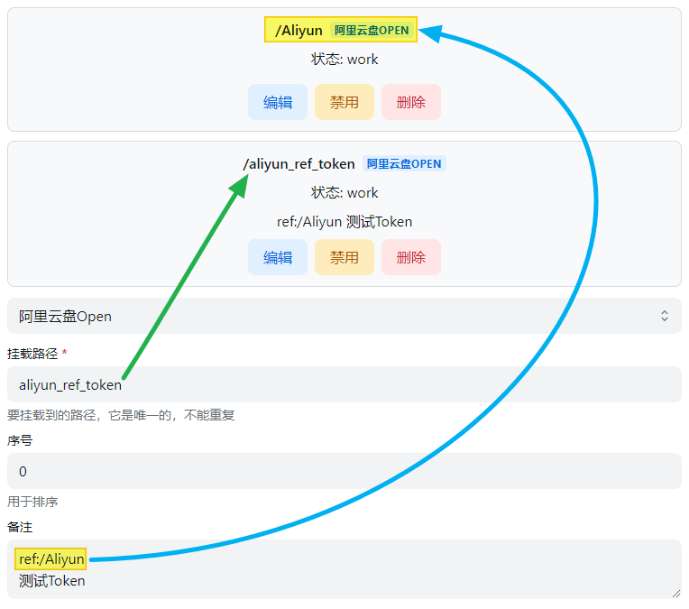
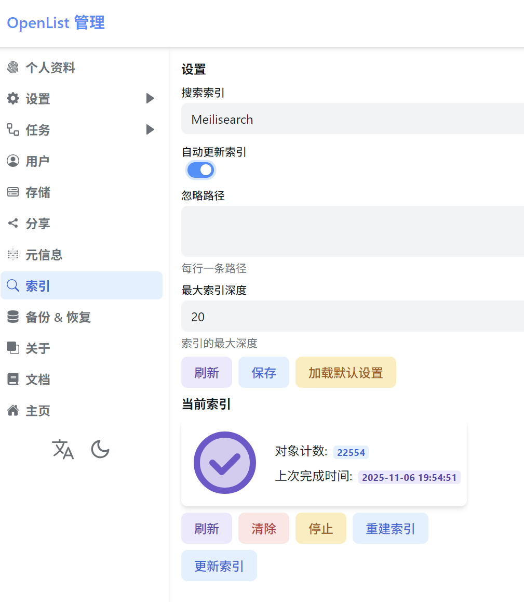

用 OpenList 搭一套多网盘自动分发流：我每周省 25 分钟的实战
把百度、阿里、OneDrive 三个盘统一到一个入口，配合 WebDAV 和定时任务，让团队找文件不用再问我——这套工作流从旧流程的手动复制到现在一条链走完，讲清每个衔接点。
我每周要给团队分发一批整理好的参考资料——产品调研文档、竞品截图包、设计素材库，分别散落在百度网盘、阿里云盘和 OneDrive 三个地方。以前的做法是：打开三个网页版网盘，按文件类型分别点「分享链接」，把链接一条条贴进 Excel，标注来源网盘和文件大小，发群里等大家认领。有人反馈某个链接过期了还要回头重新生成，有人找不到我上周说的那个文件夹又得私聊问。一套下来快半小时，而且每周重复。
这套流程的问题不止在时间。三个网盘的搜索互相隔离——有人想找"Q4 的竞品截图"，得分别进三个盘搜一遍；分享链接各有各的有效期和下载限速规则，我也没法保证每个人都能拿到；更糟的是，我自己也没有一个地方能一眼看清"这三个盘里总共存了哪些东西"。
旧流程的三个死结
复盘一下旧流程卡在哪：第一，入口分裂——三个网盘三套界面，每次分发相当于手动做一次跨平台汇总；第二，链接维护成本——临时链接过期要重新生成，永久分享又舍不得用在团队内部场景；第三，搜索盲区——文件命名不统一时，只能靠自己记着"那个截图包在阿里云盘的 XX 目录"。
想过几个方案：用脚本自动生成分享链接，维护一张链接表存 Excel——但每个网盘的开放 API 限制不一样，百度还要 OAuth 回调，脚本写出来得伺候三套接口；搭个 ownCloud 自己做个文件服务器——但我不想自己维护存储，也没预算买大容量硬盘；让大家各自加我网盘好友——权限管理混乱，而且跨平台加好友本身就是摩擦。
最后选了OpenList官网这款开源项目，核心原因就两个：原生支持我手上这三个网盘，WebDAV 协议能让下游工具直接接入，我只需要维护一个中间层。
新流程：OpenList 插进了哪一环
新流程把 OpenList 放在「多网盘统一入口」这一层，上游是三个原有网盘（我不迁移文件，直接挂载），下游分两条路给团队用：一条是浏览器直接访问 OpenList 的公开页面浏览和下载，另一条是 WebDAV 协议让团队的 NAS 和本地播放器直接读文件。整个链路的拓扑是这样的：
百度网盘 ──┐
阿里云盘 ──┤──→ OpenList 单文件版（Windows）──┬──→ 团队浏览器访问
OneDrive ──┘ └──→ NAS（WebDAV 同步）
└──→ PotPlayer / 本地播放器（WebDAV 直接播）部署选型上我用了OpenList下载提供的 Windows 单文件版，没上 Docker——我这台机器就是跑日常的工作站，不想多开一个容器。目录纪律按OpenList文档的要求固定在 D:\openlist\，exe 和 data 文件夹放一起，升级时直接替换 exe 就行。
三个衔接点的实操细节
流程里最容易断链的三个环节，我踩过坑之后整理了具体做法。
衔接点一：多网盘挂载的 refresh token 续期
这是整个流程最基础也最容易翻车的一步。三个网盘各有各的授权方式：百度网盘要 OAuth 回调取 access token，阿里云盘用 refresh token 自动续期，OneDrive 走微软的 Graph API。OpenList 的后台驱动配置页对每个平台的参数要求不一样——阿里云盘需要把 refresh token 手动填进去后才能自动续期，OneDrive 则需要在 OAuth 回调完成后自动写入。
我用了一个笨但稳的办法：每次挂载一个盘后，先手动跑一次小文件下载测试，确认 OpenList 能正常读，再等 24 小时后回来检查日志里有没有 token 过期的报错。如果有，说明那个平台的 refresh token 没正确写入，得重新走一遍授权流程。

图里的那个 refresh token 字段就是关键——填对了 OpenList 会自动续期，不用我手动刷新；填错了或者漏填，跑一周后 token 过期，整个网盘就从列表里消失了，排查起来很折磨。我现在把三个盘的 refresh token 都手动保存了一份到密码管理器，万一哪天需要重新填，不用再走一遍 OAuth 的回调流程。
衔接点二：搜索索引的定时重建
挂载完三个盘不代表文件就能被搜到。OpenList 的搜索功能依赖自建索引，刚挂载时索引是空的，得手动触发一次全量扫描，之后还需要定时重建——因为我每周都会往三个盘里放新文件，不重建索引的话，新文件在搜索里是找不到的。
索引重建面板在后台的「搜索 - 索引管理」页面，有两个参数要注意：并发数别开太大，我这台机器设成了 5，再高就会触发某些网盘的 API 限流；重建频率每周一次就够了，毕竟我不是每天都往盘里写东西。

这块我加了一个 Windows 定时任务，每周一早上自动重建索引，脚本就一行命令：openlist server 跑着的情况下，直接调用 API 触发重建。不用每次进后台手动点。
衔接点三：WebDAV 权限的收口
下游的 WebDAV 连接是整个流程里最敏感的一环——如果权限没管好，任何人拿到地址就能把我的三个盘全读走。我的做法是：单独开一个只读 WebDAV 用户，把它能访问的目录限定在我准备公开的那几个分类，不给根目录权限。然后让团队的 NAS 用这个只读账号同步数据到本地的一个归档目录，播放器（PotPlayer、nPlayer）也是用同一个只读账号的地址直接播视频文件，不用下载。
这样做的好处是：团队拿到的始终是只读视图，改不了原始文件；NAS 同步到本地做了离线备份，即使我这边 OpenList 挂了，他们本地也有一份副本；播放器直接走 WebDAV 播，不用等下载完成。
效果和边界
这套流程跑了一个月，我自己统计了一下：每周分发资料的时间从 25 分钟降到了大约 3 分钟——就是把新文件分类放好，其他全自动。团队那边也有反馈：有人说之前搜"产品资料"要在三个网盘分别搜，现在只搜一次就行；NAS 自动同步到本地后，有人出差在外也能从家里的 NAS 直接看视频，不用等网盘下载。
但这套流程也不是万能的，有几个边界我明确知道：
第一，公开访问的文件不能放敏感内容。OpenList 的公开访问是无密码的——当然也可以加 token 或者密码保护，但那样又回到了"每次给新 token"的麻烦。我的做法是建两个目录：一个公开目录给团队用，另一个私有目录存内部敏感文件，私有目录只给我自己的账号权限。
第二，某些网盘的 API 有速率限制。比如百度网盘的某些操作触发限流后，OpenList 会在日志里报错，表现为搜索不到新文件或者下载超时。遇到这种情况只能等限流窗口过去——一般几十分钟。
第三，OpenList 本身就是单点。我没做高可用部署——不值得为了每周半小时省下的时间，花精力搭一套 Docker Compose 的多副本。反正 data 文件夹每周自动备份一份到 OneDrive，最坏情况就是恢复到上周的状态，损失不了多少。
这套流程什么时候划算
如果你手上至少有两个以上的网盘，每周需要把它们的内容对外分发或者给自己的多设备同步，那 OpenList 这套工作流值得搭。核心省的不是"操作时间"，而是决策时间——不用每次分发都想"这个文件在哪个盘""给什么链接""会不会过期"这些问题，整个链路搭好后是固定的。
反过来，如果你只有一个网盘、或者不需要对外分发、或者文件量很小（每周不到 10 个文件），那不值得花两小时搭这套东西。直接用网盘自带的分享功能就行。我自己攒的一份归档资料在GitHub放了主仓库，Gitee同步一份给国内网络当镜像，GitCode是额外备的第三份。